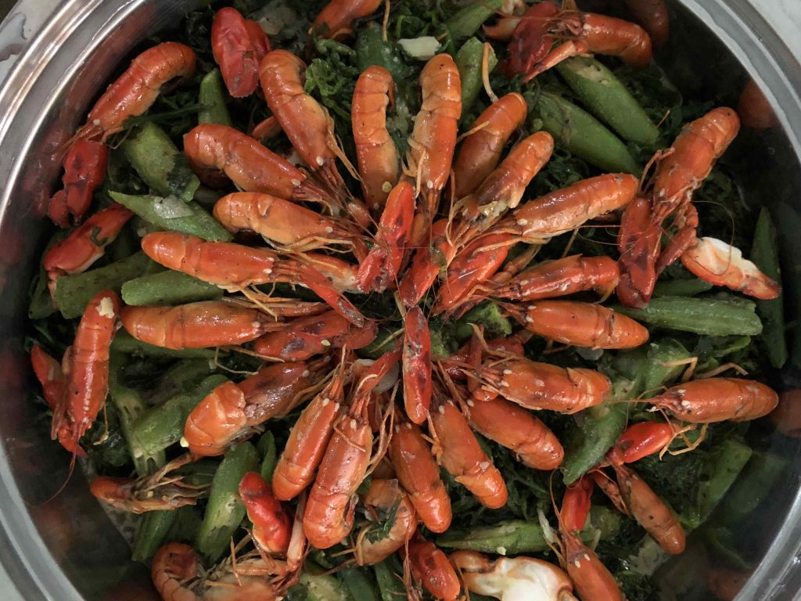
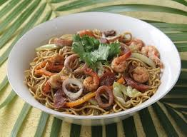
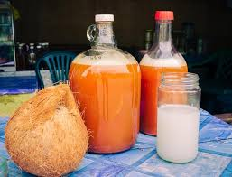
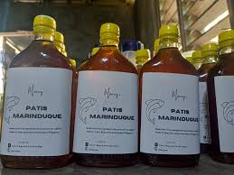
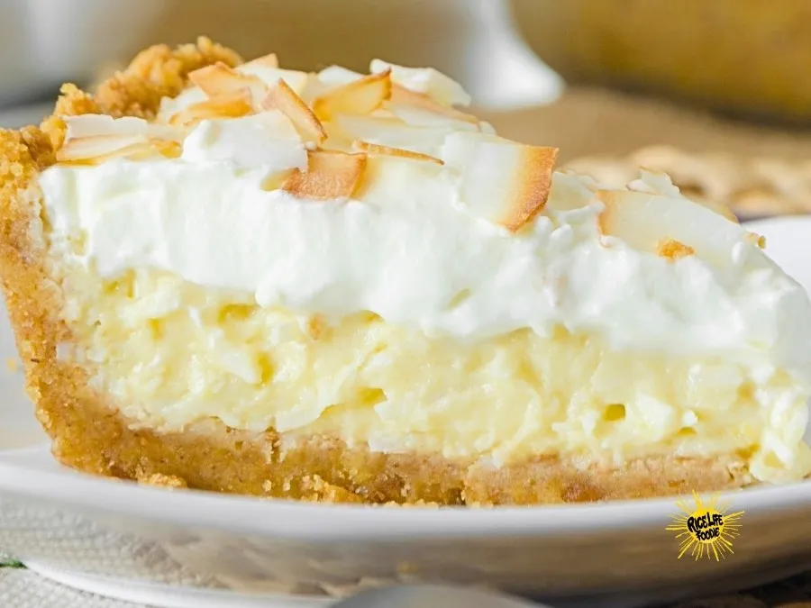

Food & Delicacies
From flower-shaped arrowroot cookies to rare freshwater crustaceans — the flavors of the heart-shaped island.
What to Eat
Marinduque's culinary identity is shaped by its coconut forests, freshwater rivers, coastal catch, and generations of artisanal tradition. Here are the must-try dishes and delicacies.

Uraro (Arrowroot Cookies)
Iconic flower-shaped cookies made from organically grown arrowroot (uraro) flour. Gluten-free, delicately sweet, and melt-in-your-mouth — each batch made by hand using traditional methods passed down through generations. These are Marinduque's most beloved pasalubong and a true edible piece of the island's heritage.

Manakla
A prized freshwater crustacean unique to Marinduque's rivers and streams, resembling a small lobster. Typically cooked in rich coconut milk (ginataan) or sautéed in garlic and native spices. A rare delicacy that can only be tasted here — a true farm-to-river-to-table island experience that cannot be replicated anywhere else.

Marinduque Miki
Thick, chewy egg noodles served in a rich pork-and-vegetable broth — Marinduque's miki is distinctively heartier than its counterparts elsewhere in the Philippines. Often paired with fresh coconut vinegar (sukang tuba), it's the ultimate comfort food. A bowl of this noodle soup carries the soul of the island in every spoonful.

Tuba (Coconut Wine)
Freshly harvested coconut sap fermented into a mild, slightly sweet wine — tuba is the lifeblood of Marinduque's culinary and social tradition. Sipped fresh at sunrise by local farmers, or aged into the potent lambanog, it flows through the island's food culture and social gatherings. Used in cooking marinades and sauces, it adds a distinctive depth to local dishes.

Marinduque Patis
Artisanal fish sauce made from small indigenous fish using traditional fermentation methods that can take months to perfect. Marinduque's patis carries a deeper, more complex umami than any commercial variety — a secret weapon in local kitchens and prized by chefs across the Philippines. The production process is a labor of patience and precision passed through fishing families.

Buko Pie & Coconut Sweets
Marinduque's coconut-forward desserts range from creamy buko pie with a perfectly flaky, buttery crust to traditional kalamay — a sticky rice cake sweetened with coconut milk and dark muscovado sugar. The island's abundance of mature coconut palms ensures that every coconut sweet here is made with the freshest, most fragrant ingredients. Each bite is pure island abundance.